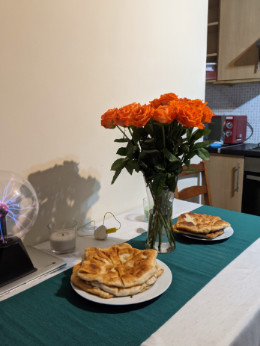
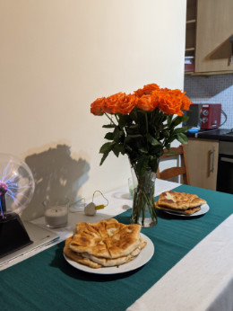

Cheese Pie
 


Cheese Pie is a popular dish in Romanian Cousine,it is made
with different type of cheese, either cow cheese, sheep or goat,
in this receipe i present the pie with cow cheese, a specific kind of cheese in east europe,
it is called sweet cheese.
Cheese pie can be prepared as well as desert, but then we will not add salt in
cheese filling, and we will add sugar as we want.
Ingredients:
- wheat flour
- sweet and fresh cow cheese
- salt, yeast, dill, oil
Cooking steps:
- add salt and yeast to flour and mix well
- mix the flour with water until get a soft dough and add a little bit of oil
- let the dough in a bowlat a warm place for c.a. 1 hour
- in a bowl mix (by spoon, do not use blender) the cheese with salt and dill,
- spred the table with a bit of flour and cut the dough in small pieces
like in the picure above
- take a pice of dough and roll over to get a round shape, thin and the size cooking pan
- heat oil in a medium size pan
- cook both sides antil nice yellow colour